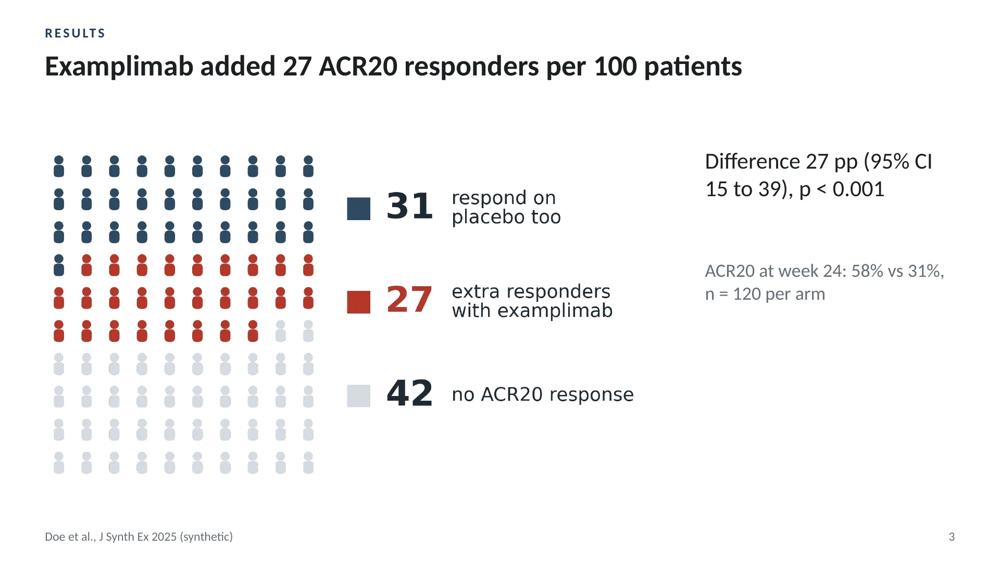

Open-source skill · Public pilot
Research slides from your own notes
Bring your notes, an outline or a spoken run-through. The skill helps you find the core message, then builds editable slides that check numbers against your sources.
Free and open source under the MIT licence.

Your story first, then the slides
You still read the paper, choose the outline and decide the main messages. The skill turns those choices into a storyboard you approve, then takes care of the layout.
Your message, with the numbers checked
FICTA-1 is a trial we invented for this demo, so no real patient data appear here. The same result three ways: a typical hand-made slide, an AI-styled slide we made as an illustration, and the slide after the skill.
Numbers checked against your sources
A made-up number on a slide can travel into a talk, a poster or a paper. The skill links each claim to its place in your source and flags what you still need to check.
Slide structure, references and selected numbers pass automated rules.
Each claim points to the page, table or figure it came from.
Interpretations the software cannot verify stay marked for you.
NOT YET CLEARED
Critical 0 · Major 1 · Minor 3 · Info 5
One interpretation is flagged for expert review before the talk. That flag is the check doing its job.
Examplimab could be an option after failure of a TNF inhibitor.
Presenter's extrapolation. FICTA-1 enrolled biologic-naive patients only; no data in TNF-inadequate responders.What the pilot can do today
Build a scientific talk: intake, source-linked storyboard, approval step, editable PowerPoint and a quality report.
Use your institution's template: works for a limited set of layouts, so check the rendered slides before you present.
Upgrade an existing deck: a per-slide diagnosis and a rebuild through an approved storyboard; your original file is never edited.
Go further: HTML slides, editing a deck in place and rehearsal support are not in this pilot yet.
Making and giving presentations is almost a daily job for me as a doctor and researcher. I would rather spend that time reading the paper and sharpening the main message than fighting fonts and layouts in PowerPoint. So I built a skill that keeps the thinking with me and takes the layout off my hands.
Hannah den Braanker, rheumatology fellow and postdoctoral researcherQuestions
What do I need?
An AI agent with access to your files and a terminal: Codex desktop, Claude Cowork or Claude Code.
Does my material leave my computer?
The skill and your files stay on your computer. Your agent's model provider still processes what the agent reads, under that provider's terms.
Can I use my institution's template?
Yes, in an experimental mode for PowerPoint templates. Check the rendered slides before you present.
What does it cost?
The skill is free. You pay only for the AI agent you already use.
Start with your next talk
Open the start prompt in your agent and go from your own story to slides you can present.